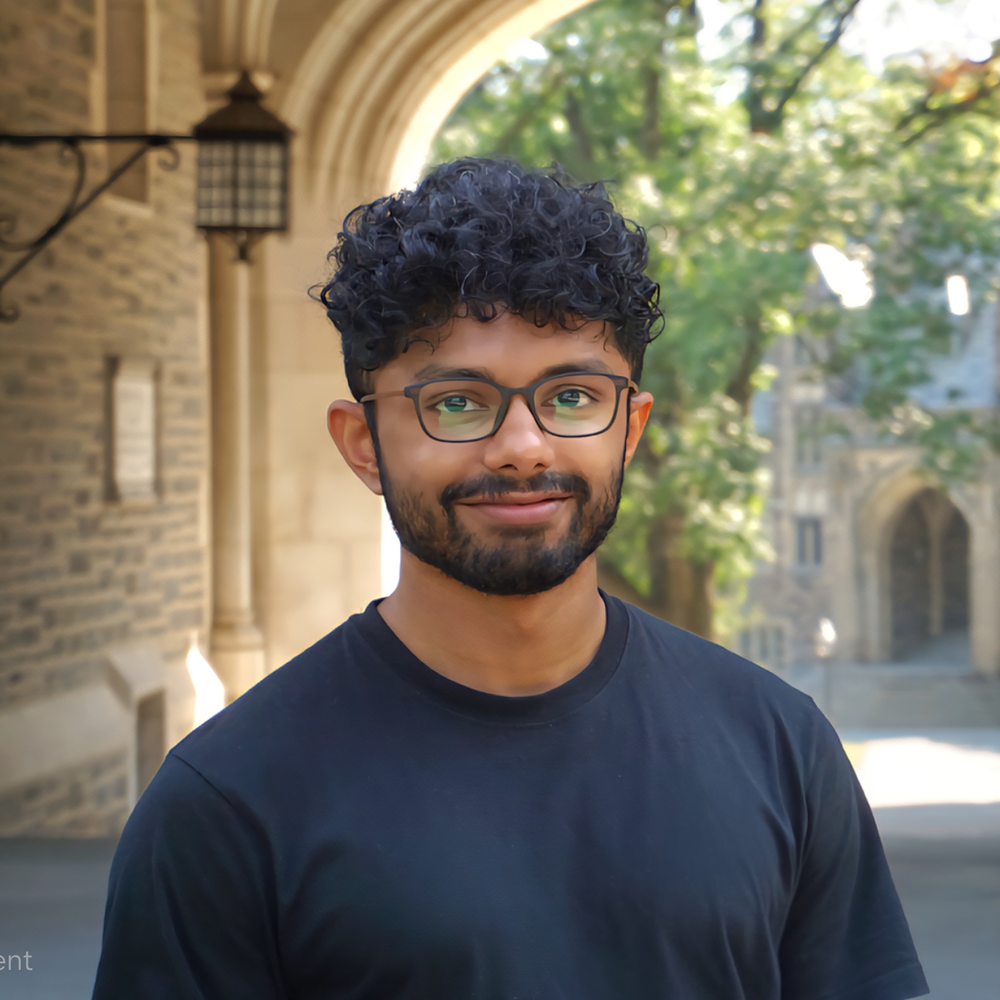

<div class="row flex-column-reverse flex-md-row py-2">
    <div class="col-md-8" id="bio">
        <h1>Joe Bobby</h1>
        <p class="text-justify">
            I'm a second-year ECE PhD student at Rice University, advised by <a href="https://github.com/vsimkus/academic-jekyll">Dr. Vivek Boominathan</a> at the SPI Lab. My current research focuses on foundational models for medical images and joint learning for spatial audio representations.
        </p>
        <p class="text-justify">
             My research interests span representation learning, meta learning, and joint representation learning. I am interested in how global context from dense tasks can be used to condition sparse, correlated subtasks. My current research focuses on using segmentation priors to improve visual-language performance on ultrasound datasets, while also exploring computer vision for acoustic source localization using 3-D priors.
        </p>
        <p class="text-justify">
            Before my PhD, I had the privilege of being a member of the ACL labs at KLA India, where I worked on improving the sensitivity and performance of semiconductor detection models. Before that, I worked with <a href="https://www.iitmz.ac.in/schools/engineering-and-science/faculty/dr-nirav-bhatt">Dr. Nirav Bhatt</a> on representation learning of molecular substrates.
        </p>
        <p style="text-align:center">
            <a target="_blank" href="https://mailhide.io/e/guc0kXT9">Email</a> &nbsp;/&nbsp;
            <a href="https://github.com/joebobs">GitHub</a> &nbsp;/&nbsp;
            <a href="https://scholar.google.com/citations?user=-h2bvn0AAAAJ&hl=en">Google Scholar</a> &nbsp;/&nbsp;
            <a href="https://www.linkedin.com/in/joe-bobby-677950130/">LinkedIn </a>
        </p>
    </div>
    <div class="col-md-4" style="z-index:4;">
        
    </div>
</div>

{% include publications.html %}
